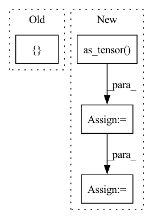

Pattern ID :37332
Before Change
idx.append(k)
self.class_dataset = torch.utils.data.Subset(self.mix_dataset, idx)
layer_output_all = torch.empty([] ) // TODO
for i, data in enumerate(self.class_dataset):
_input, _label = self.model.get_data(data)
layer_output = self.model.get_layer(_input, layer_output=self.preprocess_layer)After Change
class_dataset = torch.utils.data.Subset(self.mix_dataset, idx)
class_input, class_label = dataset_to_list(class_dataset)
class_input = torch.stack(class_input)
class_label = torch.as_tensor( class_label, dtype=torch.long)
class_dataset = TensorDataset(class_input, class_label)
class_dataloader = self.dataset.get_dataloader(mode="train", dataset=self.class_dataset, num_workers=0)
layer_output_all = [] // TODOIn pattern: SUPERPATTERN
Frequency: 3
Non-data size: 4
Instances Fragment ID: 107481416
Project Name: ain-soph/trojanzoo
Commit Name: 4adb8ae3e90425855448bfd8fc212f8d91f5332c
Time: 2021-06-01
Author: ain-soph@live.com
File Name: trojanvision/defenses/backdoor/spectral_signature.py
M Class Name: SpectralSignature
N Class Name: SpectralSignature
M Method Name: get_clean_dataloader(1)
N Method Name: get_clean_dataloader(1)
M Parent Class: BackdoorDefense
N Parent Class: BackdoorDefense
M File Name: trojanvision/defenses/backdoor/spectral_signature.py
N File Name: trojanvision/defenses/backdoor/spectral_signature.py
M Start Line: 114
M End Line: 126
N Start Line: 113
N End Line: 125
Before Change
test_size = int(test_fraction * len(X))
train_size = len(X) - test_size
X_train, X_test = random_split(X, [ train_size, test_sizeAfter Change
test_size = int(test_fraction * len(X))
train_size = len(X) - test_size
indices = torch.as_tensor( np.arange(len(X)), dtype=torch.long)
train_indices, test_indices = random_split(
indices, [train_size, test_size]
)
Fragment ID: 107481403
Project Name: aidos-lab/pytorch-topological
Commit Name: 7cf866c6b1e532267695b2cf157186a85643576e
Time: 2022-01-03
Author: bastian@rieck.me
File Name: torch_topological/datasets/spheres.py
M Class Name: Spheres
N Class Name: Spheres
M Method Name: __init__(7)
N Method Name: __init__(7)
M Parent Class: Dataset
N Parent Class: Dataset
M File Name: torch_topological/datasets/spheres.py
N File Name: torch_topological/datasets/spheres.py
M Start Line: 77
M End Line: 83
N Start Line: 77
N End Line: 89
Before Change
except IndexError:
regular_pairs = None
result = []
if regular_pairs is not None:
result.append(
self._create_tensors_from_pairs(x, regular_pairs)After Change
pairs = torch.empty((0, 2), dtype=torch.long)
try:
regular_pairs = torch.as_tensor(
cofaces[0][dim], dtype=torch.long
)
pairs = torch.cat(
(pairs, regular_pairs)
)
except IndexError:
pass
try:
infinite_pairs = torch.as_tensor(
cofaces[1][dim], dtype=torch.long
)
except IndexError:
infinite_pairs = None
if infinite_pairs is not None:
// "Pair off" all the indices
max_index = torch.argmax(x)
fake_destroyers = torch.empty_like(infinite_pairs).fill_(max_index)
infinite_pairs = torch.stack(
(infinite_pairs, fake_destroyers), 1
)
pairs = torch.cat(
(pairs, infinite_pairs)
)
Fragment ID: 107481410
Project Name: aidos-lab/pytorch-topological
Commit Name: dfe9b30492b2d691ca0db571ae265e6f81f372be
Time: 2021-12-21
Author: bastian@rieck.me
File Name: torch_topological/nn/cubical.py
M Class Name: Cubical
N Class Name: Cubical
M Method Name: _extract_generators_and_diagrams(4)
N Method Name: _extract_generators_and_diagrams(4)
M Parent Class: nn.Module
N Parent Class: nn.Module
M File Name: torch_topological/nn/cubical.py
N File Name: torch_topological/nn/cubical.py
M Start Line: 66
M End Line: 99
N Start Line: 65
N End Line: 97